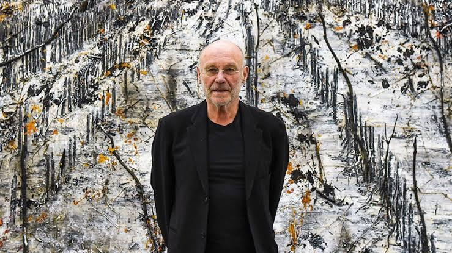
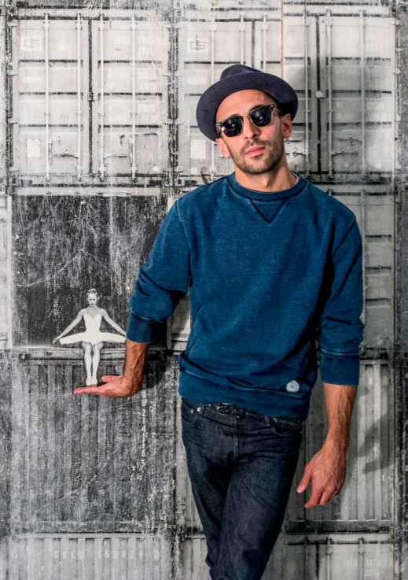

Maurizio Cattelan
Maurizio Cattelan is a leading Italian contemporary artist known for his satirical and provocative sculptures. His works often challenge the boundaries between art and reality, sparking discussions on societal norms and values. One of his notable works includes "Frank and Jamie," a sculpture depicting two New York City policemen standing on their heads.
Learn More »

Anselm Kiefer
Anselm Kiefer is a renowned German painter and sculptor whose works delve into themes of history, memory, and mythology. His large-scale paintings are characterized by their textured surfaces and incorporation of materials like lead, ash, and straw. Kiefer's recent exhibitions, such as "Fallen Angels" at Palazzo Strozzi, explore profound biblical references and human experiences.
Learn More »

JR (Jean René)
JR is a French street artist and photographer renowned for his large-scale public photography installations. He transforms urban spaces with thought-provoking images that address socio-political issues.
Learn More »